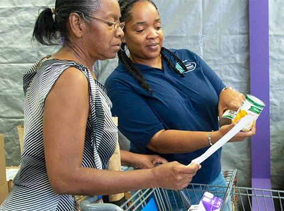

Discover our assistance to thousands of individuals each week through our innovative programs and services.
Through our Social Services Department, the Houston Soup Kitchen educates, informs, refers to other services, guides and assists one- on- one with the SNAP application process (formerly known as Food Stamps) along with any other assistance available through the Health and Human Services Commission.
Our Certified Case Assistance Navigators are available to assist our clients with;

The Houston Soup Kitchen serves income-eligible seniors (60+) through its Senior Box Program, made available as part of the Commodity Supplemental Food Program (CSFP) of the United States Department of Agriculture (USDA) that is managed by the Texas Department of Agriculture (TDA). In addition to distributing a monthly box of shelf-stable CSFP food to clients, the Houston Soup Kitchen’s Senior Box Program also offers fresh produce and other health-related items to seniors.
The Houston Soup Kitchen is at the forefront of efforts by food banks to use food as a catalyst – in partnership with social
service programs – to help individuals achieve their life goals.
An essential aspect of the Food for Change strategy is the use of data to study outcomes in two focus areas: health-related
and economic opportunities.